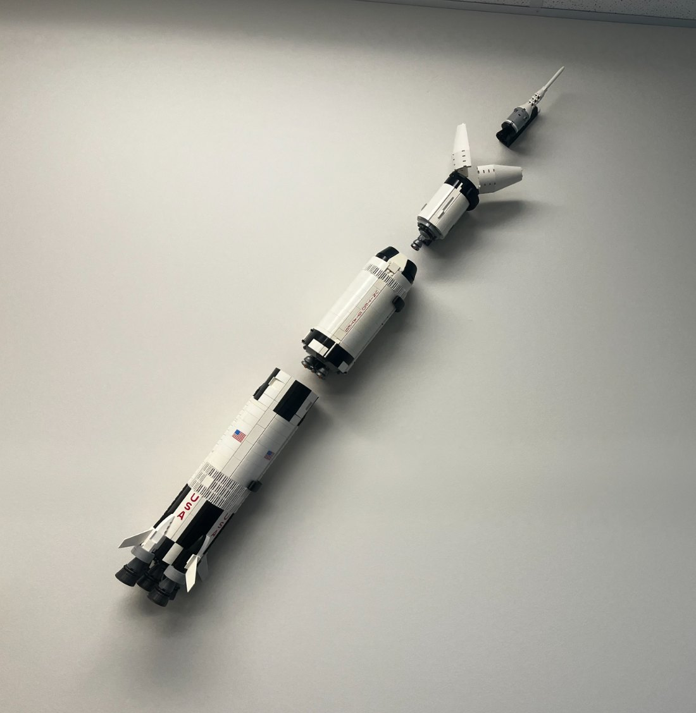
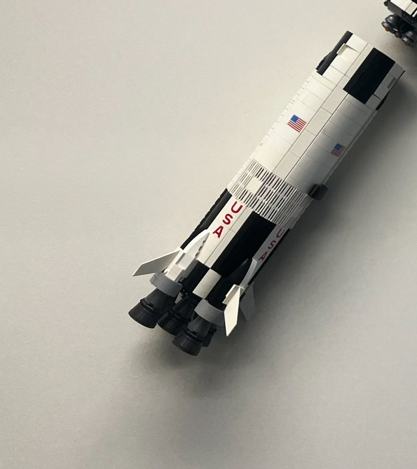
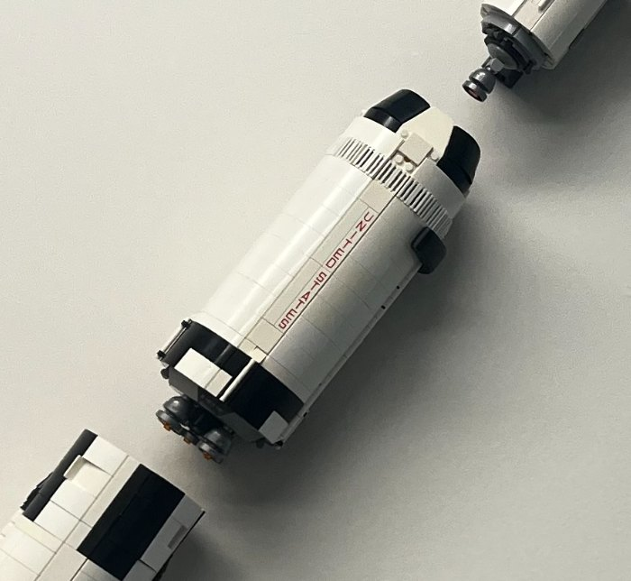
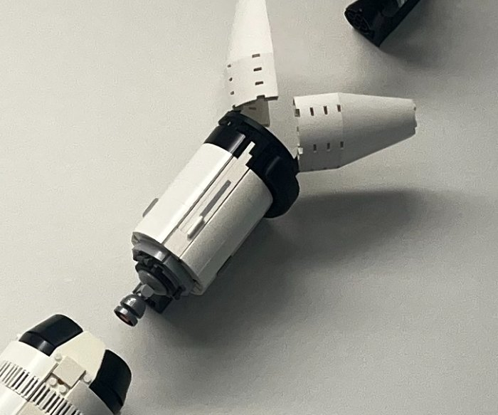

Every Renert student leaving school knowing where they shine, and how they can contribute.
A note to Moshe and Aaron
Reading through your three-year education plan, I was both humbled and excited by where Renert is headed. Your aspirations are refreshing in a world where there is little innovation in primary and secondary education.
I love all five of your pillars, but the one that speaks to my life's purpose is holistic learning. I believe that if this pillar is done right, the others build naturally from it.
What follows is the idea I'd love to build with you. I've left the how for our conversation.
Zibusiso
The launch pad
Students' own interests and choices guide their learning.
Passionate subject specialists and practitioners who model lifelong learning.
Balance across academic, physical and artistic life, blurring the line between curricular and extra-curricular.
The ability to self-learn, solve problems, communicate, create and lead.
Students explicitly appreciating peers, mentors, families, knowledge and opportunities.
Your motto, Serious Fun, says the most fun in life comes from finding what's deeply meaningful to you and pursuing it without bounds. This moonshot is a way to help every student find it.

The engines
Nothing leaves the pad without thrust, and Renert's comes from its teachers and its community.
The moonshot doesn't replace any of this. It gives it a shared destination.
Stage one · Grades 3 to 6
Each semester, a grade's teachers choose one big question that matters to children that age. Teams answer it by designing and making an artifact, using what they're learning across their subjects, with experts along the way.
Every student holds a role, each built around one of your Pillar 4 skills, and roles rotate through the year.
After each session, students note what they enjoyed, what was hard and why, and share one appreciation of a teammate in the homeroom circle.
The options students already love become starting points, and the staff who run them become experts. Choice Friday itself stays as it is.
Students who excel in a subject become specialists other teams can call on.


Stage two · Grades 7 to 9
Roles deepen into disciplines, and each student's record of roles and reflections keeps growing. A simple app lets students guide themselves through each project and keeps that record.
By Grade 9, students can look back on dozens of real experiences and write a short statement of their strengths and direction.
That record sits beside CVS, Strong and your one-to-one meetings, so the Grade 10 specialization choice is made from experience.
Stage three · Grades 10 to 12
In Grade 10, each student finds one question big enough for all of high school, drawn from the world they're entering and the specialization they've chosen.
Two examples of what students could achieve
Students whose questions meet can form a group across specializations. If the idea can be commercialized, they build a company and make a product good enough to sell in the real world.
Others pursue a personal inquiry, such as genomic sequencing for a particular disorder, with a roadmap and experts to guide them.
The project doesn't steal time from their daily work. Its demands give them a reason to learn their current material better.
Guidance
The instrument ring keeps a rocket on course.
Programming and extracurriculars offering choice, personalization, flexibility and enrichment
RP1–RP3A locally developed program where the question is shared but every answer, role and reflection is personal, enriched by real audiences and experts.
Student surveys and homeroom discussions that inform programming and mark progress in appreciation and community
RP1–RP5Every session ends with a reflection and a teammate appreciation that flows into the homeroom circle: a steady stream of student voice.
Personalized course programming and career planning through CVS, Strong, interviews and one-to-one meetings
RP1, RP4A multi-year record of what each student actually did, enjoyed and found hard, to sit beside those assessments.
Post-secondary trends through alumni surveys, alumni visits and community partners
RP1, RP2, RP4Alumni and community partners become the experts each question draws on, and what they share about a changing world shapes the next questions.
Preparing students for post-secondary studies, including admissions and scholarships
RP1–RP4A portfolio of each student's own role, decisions and impact.
Developing aptitudes and skills that enhance the school and wider community
RP2, RP4, RP5Teams answer questions that matter, for real audiences.
Student-led homework clubs and Choice Friday options that build mentorship and leadership
Specialists sharing expertise across teams as a professional role.
Your community's call for practical life skills, including financial literacy
High school companies put budgets, pricing and real customers in students' hands.
The Moon
“More than getting into the university of their dreams, students will be able to say who they are, what they're passionate about, where they're strong, what they're still working on, and how they can best contribute to the world.”
If this resonates with you, let's talk and shape the first stage together.
Zibusiso Mafaiti · Prepared for Renert School · 25 September 2026